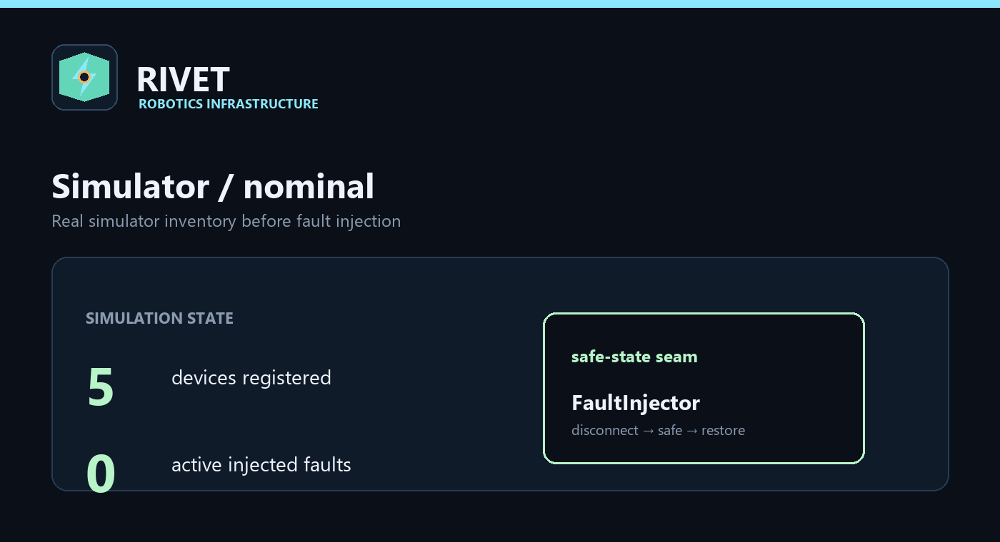

Rivet 1.2.0 · five minutes to a local run
Getting started
Rivet runs without Pi hardware through its deterministic simulator. Install the project, verify the runtime, then explore capabilities and safety boundaries before connecting an adapter.
Install and verify
python -m pip install -e ".[dev]" python -m rivet version --verbose python -m rivet verify
Explore
python -m rivet discover python -m rivet tree python -m rivet preflight python -m rivet run --simulate --fault motion.left-wheel python -m rivet mission run "inspect zone A" --role inspection --dry-run

Release evidence
Use rivet-dev audit-content for the unfinished-content scan and python -m rivet check-release for the strict gate. Simulator PASS results are not hardware certification; physical deployment still requires driver qualification and electrical, mechanical, emergency-stop, identity, and regulatory review.